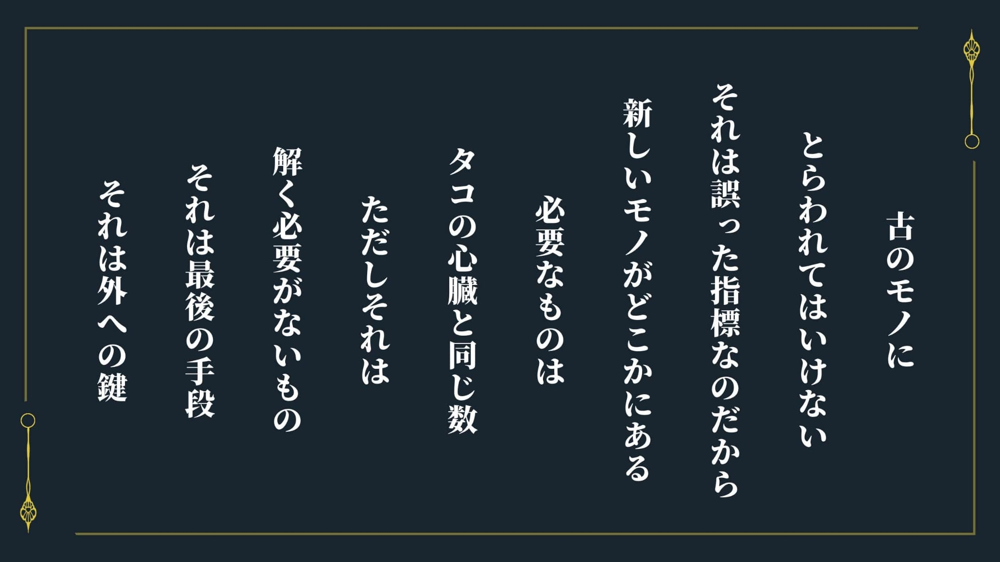
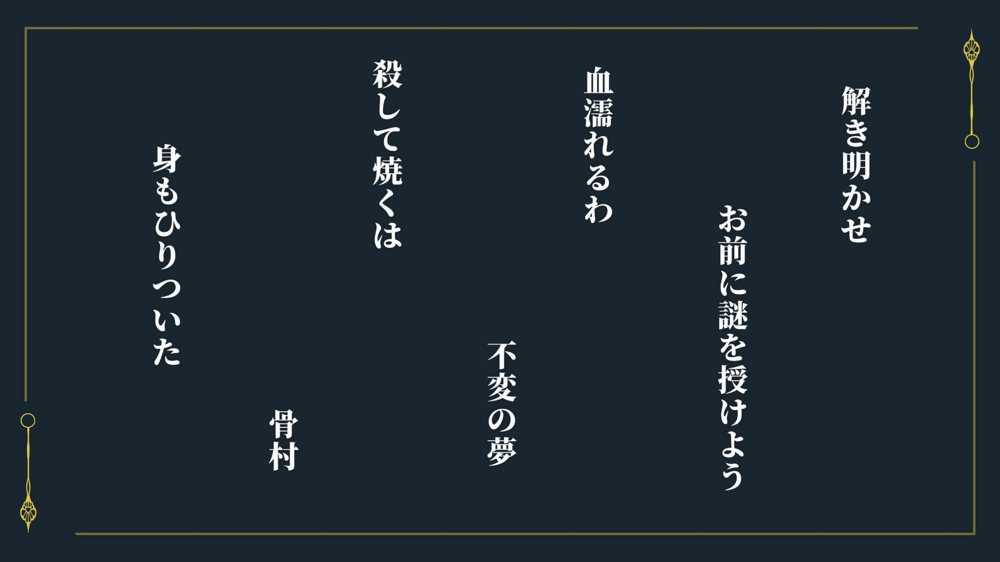
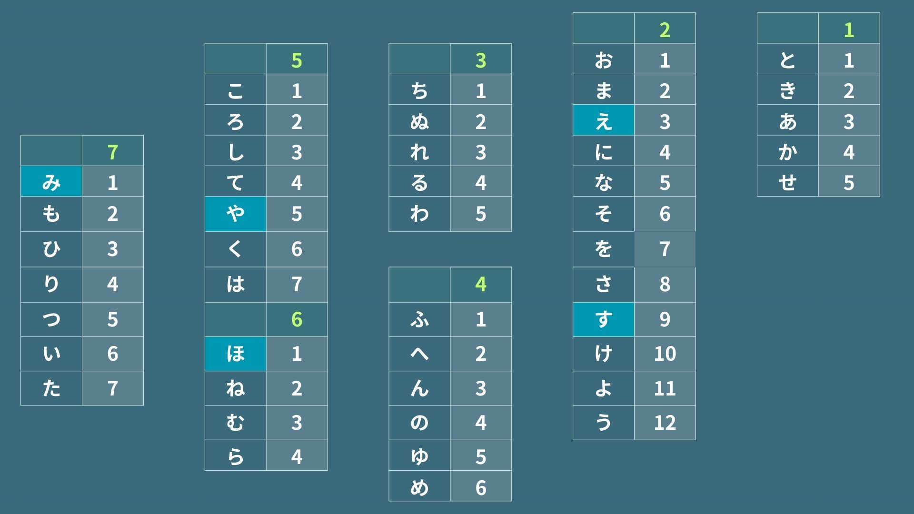

謎解き
謎について
シナリオ内で作者が散りばめた謎の解説詩志麻の手紙
怪しい人物について、探索者に伝える手紙。詩志麻自身は早く殺される可能性が高いため、他の招待客が手を出しにくい九重を媒介にして探索者の補助をした。
書斎に詩志麻が用意した上杉暗号の資料を基にとくと、「一ノ瀬イチカ」の名前が出てくる。
【0325－詩志麻司馬の手紙】（【メモ５】）
見知らぬ客人へ
これを読んでいるってことは僕は死んでいるんだろうね。さて、僕がどんな死に方をしたにせよ。僕は殺された。犯人は分からない。この手紙はここに来た日に書いたからね。とりあえず、九重さんではない。それだけは言っておく。別に惚れたとかでもないから。九重さんはね、やってない人だからだよ。色々言いたいが、ルールがあってね。ルールについても基本的には開示できないんだ。
まあ、君達ならルールをみているかもしれないけど。ああ、見たといえば、９の部屋の額を見たかい？いろは歌 でね。知っているかもしれないが、いろは歌はすべての仮名を一度ずつ使用している日本語版の完全パングラムなんだ。色んな部屋に飾られているものは面白い。良かったら僕の部屋も見てくれ。
あと、一つ頼みごとがしたい。実は僕には助手がいて、上杉君というのだが、僕が死んだこと連絡をしてほしいんだ。 〒112-1457 神奈川県久留間市南雲 411-2127。上杉で届くはずだ。よろしく頼むよ。
世紀の名探偵 詩志麻司馬
112-1457 神奈川県久留間市南雲411-2127
これを読んでいるってことは僕は死んでいるんだろうね。さて、僕がどんな死に方をしたにせよ。僕は殺された。犯人は分からない。この手紙はここに来た日に書いたからね。とりあえず、九重さんではない。それだけは言っておく。別に惚れたとかでもないから。九重さんはね、やってない人だからだよ。色々言いたいが、ルールがあってね。ルールについても基本的には開示できないんだ。
まあ、君達ならルールをみているかもしれないけど。ああ、見たといえば、９の部屋の額を見たかい？いろは歌 でね。知っているかもしれないが、いろは歌はすべての仮名を一度ずつ使用している日本語版の完全パングラムなんだ。色んな部屋に飾られているものは面白い。良かったら僕の部屋も見てくれ。
あと、一つ頼みごとがしたい。実は僕には助手がいて、上杉君というのだが、僕が死んだこと連絡をしてほしいんだ。 〒112-1457 神奈川県久留間市南雲 411-2127。上杉で届くはずだ。よろしく頼むよ。
世紀の名探偵 詩志麻司馬
112-1457 神奈川県久留間市南雲411-2127
【書斎―図書館成功⑥】
昔ながらの暗号ロジック
①アナグラム →言葉の入れ替え
※あきとかせ→ときあかせ
②シーザー暗号→言葉のずらし（あいうえお表の1段上の文字を読む等）
※例：なくいきそ→ときあかせ
③上杉暗号→7×７マスにいろは歌を順番にあてはめ、縦横のマス数で表すもの
例：１１→い １２→ろ ２１→ち
①アナグラム →言葉の入れ替え
※あきとかせ→ときあかせ
②シーザー暗号→言葉のずらし（あいうえお表の1段上の文字を読む等）
※例：なくいきそ→ときあかせ
③上杉暗号→7×７マスにいろは歌を順番にあてはめ、縦横のマス数で表すもの
例：１１→い １２→ろ ２１→ち
例をもとに、上杉暗号の７×７にすると以下のような表になり、住所の数字をひろう。
→１１（い） ２１（ち） ４５（の） ７４（せ） １１（い） ２１（ち） ２７（か）
→一ノ瀬イチカ
主催者
描写
あなたたちのもとへ一通の空色の封筒が届く。
それは、とある館への招待状。
ぜひ、いままで経験した出来事を外に出られない病気の私に聞かせてほしいという何とも奇妙なものだった。手紙には、その館への地図と、前金となる多額の金が同封されていた。また、館に訪れた際にさらに金を払うという。
また、差出人のところには数字の羅列が記載されていた。
「３１４３２７１３３６６１」
それは、とある館への招待状。
ぜひ、いままで経験した出来事を外に出られない病気の私に聞かせてほしいという何とも奇妙なものだった。手紙には、その館への地図と、前金となる多額の金が同封されていた。また、館に訪れた際にさらに金を払うという。
また、差出人のところには数字の羅列が記載されていた。
「３１４３２７１３３６６１」
→３１（よ） ４３（う） ２７（か） １３（は） ３６（ね） ６１（あ）
【書斎ー図書館成功①】
苗字や名前が載っている
八番目の招待客がいるとしたらなにヒントになるかもしれない
一部抜粋
四十八願 ―よいなら
八月朔日 ―ほずみ
八日刃 ―ようかば
八重嶌 ―やえしま
八雲 ―やくも
８の招待客の名前／にくもけね
＜主催者からの挑戦状＞（ 【メモ３】）
親愛なる 客人へ
お越しいただき、誠に感謝する。我がルドベキアの館へようこそ。
君のその支える力を私は評価している。そこで、君には支える情報をあげよう。
「にくもけね」
もし、最後のその先で阻まれたとき、この言葉が手助けになるだろう。この言葉を使うことがないことを祈る、なんせつまらない結果だとわかるからだ。アルメリアの花が目印だ。その向こうへ行くときには、気を付けてほしい。事件の解決をすること、使用人を連れていくこと。この２つが鍵となる。それと、もう１つ、ハナズオウ最後にしたほうがいい。
もし、時間を待つというならそれでもいい。
だが、安全は保証しない。この館には人殺しがいるのだから。
きみたちの命が尽きる前に、その素晴らしい才能を見せてくれると嬉しい。
お越しいただき、誠に感謝する。我がルドベキアの館へようこそ。
君のその支える力を私は評価している。そこで、君には支える情報をあげよう。
「にくもけね」
もし、最後のその先で阻まれたとき、この言葉が手助けになるだろう。この言葉を使うことがないことを祈る、なんせつまらない結果だとわかるからだ。アルメリアの花が目印だ。その向こうへ行くときには、気を付けてほしい。事件の解決をすること、使用人を連れていくこと。この２つが鍵となる。それと、もう１つ、ハナズオウ最後にしたほうがいい。
もし、時間を待つというならそれでもいい。
だが、安全は保証しない。この館には人殺しがいるのだから。
きみたちの命が尽きる前に、その素晴らしい才能を見せてくれると嬉しい。
【メモ３】
「にくもけね」がキーワード
この言葉を使うことがないことを祈る、なんせつまらない結果だとわかる
→使用人（九重）を連れていかなかった場合や、そもそも謎解きをしなかった場合に「８の部屋」の招待客の名前を入れる想定のため
【0325－空色の封筒】(【メモ４】)
十二ヶ月の花や草木が描かれた札をするあなたに恋をして、 両目を差し出した。差し出した数だけ結ばれた。なおも欲するわたしにあなたは嘲笑うような声で告げたのだ。
「わたしの名を答えてみせろ」と。
わたしは 鏡越しに見るあなたが好きだった。
両目がない私はもう見ることはできないけれど。あなたのいる方へと振り向き口を1度開いた。
あなたが微笑んだ気がした。 見上げた先にあなたがいるのを感じる。わたしはあなたの名を告げた。
わたしは 鏡越しに見るあなたが好きだった。
両目がない私はもう見ることはできないけれど。あなたのいる方へと振り向き口を1度開いた。
あなたが微笑んだ気がした。 見上げた先にあなたがいるのを感じる。わたしはあなたの名を告げた。
十二ヶ月の花や草木が描かれた札→花札（４８枚）
両目→２個
差し出した数だけ結ばれた。なおも欲するので→結ばれていないのは→４８－２＝４６
あいうえお表＝４６文字
４６文字の表＝４の部屋の額
※この辺は、４の部屋への誘導をしているので解かなくていい想定。あいうえおといろは歌は図書室で文字数を開示
鏡越しに見る→反転させる
振り向き口を1度開いた→１度
見上げた先→上を見る
「メモ３」「メモ４」からの黒幕からの指示要約
４６文字の表を使って、「メモ３」の「にくもけね」の１つ上の言葉を読み、反転をさせる
７の部屋
８の招待客の名前謎解きのヒントとして、７の部屋の額をきっかけとして置いてあります。
あくまできっかけとしてなのでそこまで直接的ではありませんが、古いものと新しいもので、４の額へ誘導したり、タコの心臓で複数個必要などを誘導したりしています。
古のモノ→あいうえお表やいろは歌
新しいモノ→４の部屋の額
タコの心臓＝３つ
１つ目：【メモ３】「にくもけね」
２つ目：【メモ４】
３つ目：４の部屋の額

４の部屋
８の招待客の名前謎解きに必要なモノです。日本語のひらがなのアナグラムになっています。
探索者がもらった「にくもけね」の１つ上の文字を読むと「えやみすほ」
これを反対から読むと「ほすみやえ」→「八月朔日 八重」という謎解き。


書斎のかるた
「かるた」という本を見つける。この書斎には、少し異色だ。
【要約】
かるた：もとはポルトガル語の「carta」が語源で遊戯や博打に使用される札や、遊戯そのものを指す
かるたにも種類があり、日本ではお主に、花札、歌がるた、いろはかるた、トランプ（西洋かるた）などが有名である。
花札（花かるた、花がるた）：48枚、12か月を草木や花が描かれ花鳥風月が表現されているもの。48枚というカード構成はポルトガルが由来。草木や花の絵柄にすることで数字を隠し、賭博禁止の抜け道としても使用されたことがある。
歌がるた：文字札・絵札ともに、あいうえお46枚ずつの読み札・取り札が用意されいる。なお、小倉百人一首の場合は絵札ではなく文字札とし、1番の天智天皇の歌から100番の順徳院の歌までを上の句、下の句で分けたもので行う。
トランプ（西洋かるた）：起源は諸説あり、エジプトや中国、インドなど言われることが多い。日本では、英米式の4種各13枚の計52枚 (+ジョーカー) を1セットにしたものが明治以降に普及した。
いろはかるた：いろは47文字に対応したことわざを使用。ただし、内容は場所によって、異なる
例：江戸→犬も歩けば棒に当たる、上方→一寸先は闇、尾張→一を聞いて十を知る
【要約】
かるた：もとはポルトガル語の「carta」が語源で遊戯や博打に使用される札や、遊戯そのものを指す
かるたにも種類があり、日本ではお主に、花札、歌がるた、いろはかるた、トランプ（西洋かるた）などが有名である。
花札（花かるた、花がるた）：48枚、12か月を草木や花が描かれ花鳥風月が表現されているもの。48枚というカード構成はポルトガルが由来。草木や花の絵柄にすることで数字を隠し、賭博禁止の抜け道としても使用されたことがある。
歌がるた：文字札・絵札ともに、あいうえお46枚ずつの読み札・取り札が用意されいる。なお、小倉百人一首の場合は絵札ではなく文字札とし、1番の天智天皇の歌から100番の順徳院の歌までを上の句、下の句で分けたもので行う。
トランプ（西洋かるた）：起源は諸説あり、エジプトや中国、インドなど言われることが多い。日本では、英米式の4種各13枚の計52枚 (+ジョーカー) を1セットにしたものが明治以降に普及した。
いろはかるた：いろは47文字に対応したことわざを使用。ただし、内容は場所によって、異なる
例：江戸→犬も歩けば棒に当たる、上方→一寸先は闇、尾張→一を聞いて十を知る
あいうえお表の文字数と、花札の枚数は書斎の「かるた」から取得可能